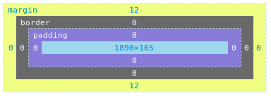

HTML5 e CSS
HTML
HTML é uma linguagem baseada em marcação.
Com isso usamos TAGS para marcar o conteúdo que queremos apresentar, por exemplo este texto está em uma tag <p> que é descrita para utilização de parágrafos.
Para declarar o documento como HTML5 é simples, basta incluir o <!DOCTYPE html> como o exemplo a seguir:
<!DOCTYPE html>
<html lang="pt-br">
<head>
<meta charset="utf-8">
<title>Título da página</title>
</head>
<body>
<h1>Título</h1>
<p>Parágrafo.</p>
</body>
</html>
Semântica
Sistema linguístico, o componente do sentido das palavras e da interpretação das sentenças e dos enunciados.
Tem alguns motivos importantes para utilizar as tags corretas para cada situação. A seguir estão alguns:
- Acessibilidade
- Ferramentas de Indexação (Google, Bing, ...)
- Browsers minimalistas ou pelo terminal
Algumas tags e as suas definições:
<p> -> para descrever um parágrafo <b> -> para realçar em negrito uma palavra <strong> -> para realçar em negrito uma frase <img> -> para importar uma imagem <table> -> para definir dados tabulares <ul> -> Lista desordenada (com marcadores) <ol> -> Lista ordenada, com número ou alfanumérico <h1> -> Primeiro título, é importante deixar somente um H1
Com o CSS é possível manipular todo comportamento das TAGs do HTML, como por exemplo: fazer com que um parágrafo vire um título com o tamanho correspondente ao título. Entretanto os programas para acessibilidade não irão entender como um título e sim como um parágrafo e irá informar para o deficiente visual.
O que o HTML5 trouxe de novo?
Novos elementos semânticos como <header>, <footer>, <article>, <section>.
Alguns sites criavam códigos como:<id="nav">,<class="header">,<class="section">, agora o HTML5 oferece os novos elementos semânticos para padronizar o código sem precisar usar em classes e id. A seguir uma imagem mostrando como utilizar:

Novos atributos para os elementos de formulários como number, date, time, calendar, range.
Novos elementos gráficos como <svg>, <canvas>.
Novos elementos de multimídia como <audio>, <video>.
CSS
CSS - Cascading Style Sheets (Folhas de estilo em cascata)
CSS é uma linguagem de estilo para um documento HTML, com o css é possível controlar fontes, cores, bordas, margens, imagens, posicionamento de elementos HTML e outras coisas.
O efeito cascata foi feito para estabelecer prioridades para a aplicação de regras de estilo aos elementos HTML
Declarando as regras do CSS
Para declarar uma regra no CSS para um elemento no HTML terá que seguir a seguintes regras "Seletor { propriedade: valor; }", confira alguns exemplos a seguir:
Com essa declaração todos os parágrafos existentes no HTML irão ter fonte de 14px e cor azul.
<p> texto texto </p>
p {
color: blue;
font-size: 14px;
}
Com essa declaração todos os elementos existentes no HTML com a classe 'nome-class-1' receberão as regras, independente se é paragrafo, título, tabela, etc.
<p class="nome-class-1"> texto texto </p>
<b class="nome-class-1"> texto texto </b>
<h2 class="nome-class-1"> texto texto </h2>
.nome-class-1{
color: red;
font-size: 10;
}
Você poderá declarar por ID, como o ID é único para uma página somente ele receberá as regras.
<div id="identificador1"> conteúdo </div>
#identificador1 {
color: red;
}
Você pode especializar a regra para atender a um elemento. No caso a seguir somente o texto de exemplo 2 receberá as regras.
<div>
<p>
Texto de exemplo <b>especialização</b>
</p>
</div>
<div class="identificador2">
<p>
Texto de exemplo <b>especialização</b>
</p>
</div>
.identificador2 p b {
font-size: 20px;
}
Regras separadas por espaço implica em buscar elementos descendentes.
Essa declaração .identificador2 p b { procurará primeiramente o '.identificador2' em seguida procurará o <p> descendente e depois o <b> e como o <b> foi o último na declaração ele que receberá a regra.
Quando não tem espaço entre as regras significa que é o mesmo elemento.
<span class="identificador2">
<p>
Texto de exemplo <b>especialização</b>
</p>
</span>
<div class="identificador2">
<p>
Texto de exemplo <b>especialização</b>
</p>
</div>
div.identificador2 p b {
font-size: 20px;
}
O exemplo acima mostra que somente o <b> dentro da <div> que receberá as regas, como a declaração está assim div.identificador2 p b 'div.identificador2' sem espaço entre eles significa que somente a classe identificador2 que estiver em uma DIV que atenderá as regras.
Especificidade
A especificidade é a forma que os navegadores definem quais as regras que serão aplicadas para o elmento. A especificidade é baseada apenas nas regras impostas na composição de diferentes tipos de seletores. Como por exemplo:
O CSS tem sua especificidade para interpretar as regas declaradas, é importante entender que não será a ordem que foi declarada que aplicará a regra, existe essa possibilidade mas somente se você utilizar a mesma declaração por exemplo: p{ color: black } e na linha seguinte p{ color: blue }
O cálculo é feito contabilizando a quantidade de seletores existentes na declaração, e é feito a separação da seguinte forma:
- quantidade de IDs na regra e declarações inline ( acrescenta se existir IDs a quantidade na coluna 'a' )
- quantidade de class, atributos, pseudo-classes ( acrescenta se existir class, atributos, pseudo-classes na coluna 'b' )
- quantidade de elementos e pseudo-elementos ( acrescenta se existir elementos e pseudo-elementos a quantidade na coluna 'c' )
Vejamos como ficará isso na prática:
<form class="formulario">
<input id="usuario" class="login" type="text">
</form>
Agora vamos fazer algumas regras para este elemento:
<style type="text/css">
form input{
font-size: 16px;
}
.formulario #usuario{
font-size: 14px;
}
form input#usuario{
font-size: 12px;
}
input.login {
font-size: 10px;
}
input#usuario {
font-size: 8px;
}
</style>
| Declaração | ID | Class | Elementos |
|---|---|---|---|
| form input | 0 | 0 | 2 |
| .formulario #usuario | 1 | 1 | 0 |
| form input#usuario | 1 | 0 | 2 |
| input.login | 0 | 1 | 1 |
| input#usuario | 1 | 0 | 1 |
A exceção !important foi criada para sobrescrever o estilo do autor. Como por exemplo se estiver usando o bootstrap e não quer alterar o bootstrap.css você escreverá no seu arquivo de estilo as regras e adicionará o !important na frente antes do ponto e vírgula.
Box model
Todo elemento HTML é representado por uma caixa chamada box model é um retângulo por volta do elemento contendo os itens: margin, border, padding e o conteúdo
Content: é o conteúdo da box onde ficará texto e/ou imagem.
Padding: é uma área que envolve do conteúdo. O padding é transparente
Border: é a borda que envolve o padding e o conteúdo.
Margin: é uma área que envolve a borda por fora. A margin é transparente
Display
A propriedade display é a mais importante no CSS para controlar o layout. Você pode controlar se um elemento vai continuar na mesma linha inline, se vai quebrar linha block, se ele vai continuar em linha porém continuar respeitando as margens dele mesmo inline-block, se ele vai deixar de aparecer none, entre outros.
Alguns elementos com display: block;
<div> <h1> - <h6> <p> <form> <header> <footer> <section>
Alguns elementos com display: inline;
<span> <a> <img>
Você também pode transformar qualquer elemento para o comportamento de tabela. <table> é display: table; por padrão, <tr> é display: table-row; por padrão, <td> é display: table-cell; por padrão.
Position
A propriedade position especifica o posicionamento de um elemento:
position: static;
Todos elementos HTML são static por padrão, essa propriedade não afeta a posição dos elementos, ela segue o fluxo normal da página. As propriedades top,bottom, left e right não irão alterar a posição do elemento.
position: relative;
Um elemento com relative está posicionado relativamente de acordo com a sua posição. Você pode inserir valores nas propriedades top, bottom, left e right
position: fixed;
Um elemento com fixed ficará fixo com relação a janela, sempre visível mesmo se utilizar a barra de rolagem.
position: absolute;
O elemento é posicionado relativo ao primeiro elemento antecessor não static
Overflow
A propriedade overflow define o que acontecerá quando o conteúdo transborda das margens de um elemento.
visible
O conteúdo não será cortado se exceder o tamanho definido do elemento.
hidden
O conteúdo será cortado se exceder o tamanho definido do elemento.
scroll
O conteúdo será cortado mas aparecerá uma barra de rolagem para visualizar o restante do conteúdo.
auto
Irá aparecer a barra de rolagem somente se o conteúdo exceder o elemento.
Media Queries
Media query é uma forma de declarar um bloco de código em CSS se uma determinada regra foi atendida.
@media not|only mediatype and (expressions) {
CSS-Code;
}
@media screen and (max-width: 500px) {
body {
background-color: lightblue;
}
}
@media all and (orientation:portrait) { … }
@media all and (orientation:landscape) { … }
<link rel="stylesheet" media="screen and (max-width: 500px)" href="example.css" />